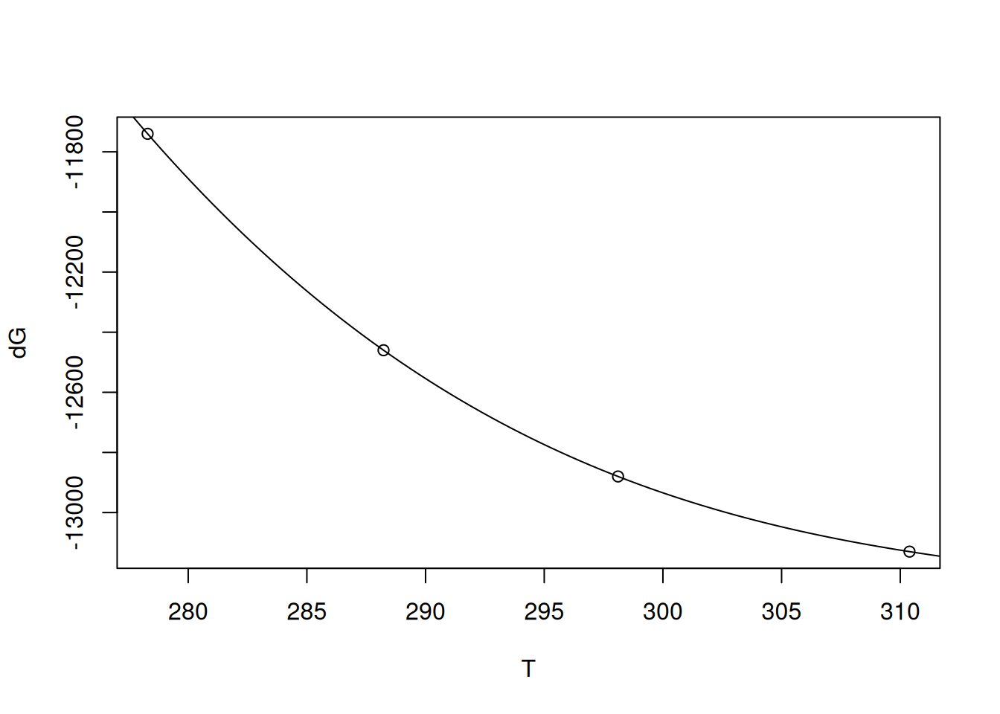

# Definição de matrizes
A <- matrix(c(1, -308, 1, -318), ncol = 2, byrow = TRUE) # matriz A;
# o sinal negativo decorre da função possuir inclinação negativa
b <- matrix(c(4.4, -5.2), ncol = 1) # matriz bBiotermodinâmica
Bioenergética
Enquanto a Cinética trata do fluxo de informações que envolvem um fenômeno, a Termodinâmica trabalha com as forças nele envolvidas. Essas forças denominadas quantidades termodinâmicas auxiliam a compreensão de variados fenômenos biológicos, tais como os equilíbrios elencados abaixo.
- Estabilidade de biopolímeros;
- Interação ligante-receptor;
- Transporte de biomoléculas e íons;
- Mudanças conformacionais em biomacromoléculas;
- Associação de biopolímeros;
- Transferência de elétrons em proteínas;
- Combustão e síntese de biomoléculas;
- Geração de energia metabólica.
Ainda que não caiba à Termodinâmica explicações sobre a teoria atômica, mecanismos moleculares ou taxas de reação, seu formalismo teórico permite avaliar as mudanças de energia (entalpia, entropia, e energia de Gibbs) que ocorrem entre o estado inicial e final de uma transformação. A partir dessas quantidades, é possível esboçar modelos mecanísticos das transformações envolvidas, baseados no conjunto empírico de observações similares reportadas.
A equação de Gibbs para o equilíbrio que descreve essas quantidades é:
\[ \Delta G = \Delta H - T * \Delta S \tag{1}\]
Exemplifica-se para isso as tranformações nos valores de \(\Delta\)H e \(\Delta\)S que podem ser extraídos de uma transição conformacional que acompanha a desnaturação térmica de uma proteína (Cooper 2004).
Para isto é necessário determinar-se o valor de \(\Delta\)G da transição de fase, o que pode ser realizado de diversas maneiras, e a partir de metodologia igualmente diversificada. Assim, por meio de medidas espectroscópicas (absorção molecular, fluorescência, luminescência), hidrodinâmicas (viscosimetria, coeficiente de sedimentação, pressão osmótica), eletroquímicas (potenciometria, voltametria), ou de atividade biológica, dentre muitas, é possível quantificar o parâmetro termodinâmico \(\Delta\)G. Esse, por sua vez, pode ser extraído das relações que seguem, considerando-se uma transição de dois estados:
Para isto é necessário determinar-se o valor de \(\Delta\)G da transição de fase, o que pode ser realizado de diversas maneiras, e a partir de metodologia igualmente diversificada. Assim, por meio de medidas espectroscópicas (absorção molecular, fluorescência, luminescência), hidrodinâmicas (viscosimetria, coeficiente de sedimentação, pressão osmótica), eletroquímicas (potenciometria, voltametria), ou de atividade biológica, dentre muitas, é possível quantificar o parâmetro termodinâmico \(\Delta\)G. Esse, por sua vez, pode ser extraído das relações que seguem, considerando-se uma transição de dois estados:
\[ N \rightleftarrows D \tag{2}\]
\[ K_{eq} = \frac{[D]}{[N]} \tag{3}\]
\[ \Delta G = - R*T*ln(K_{eq}) \tag{4}\]
Onde \(K_{eq}\), [D], e [N] representam, respectivamente, a constante de equilíbrio de desnaturação da proteina, bem como as concentrações dessa na forma desnaturada e nativa.
Uma rápida observação da Equação 22 deixa claro tratar-se de uma função linear com a temperatura. Dessa forma é plausível imaginar um sistema no qual as quantidades termodinâmicas acima (\(K_{eq}\) e, consequentemente, \(\Delta\)G) podem ser determinadas com variação da temperatura. Colocando em números:
Em \(35^{o}\)C: \(\Delta\)G\(_{desn}\) = \(\Delta\)H\(_{desn}\) - 308 * \(\Delta\)S\(_{desn}\) = +4,4 kJ \(mol^{-1}\)
Em \(45^{o}\)C: \(\Delta\)G\(_{desn}\) = \(\Delta\)H\(_{desn}\) - 318 * \(\Delta\)S\(_{desn}\) = -5,2 kJ \(mol^{-1}\)
Perceba que uma solução para o problema envolve a resolução sequencial das equações, subtraindo-se uma da outra para uniformizar uma incógnita (digamos, \(\Delta\)S) que aplicada à outra equação resultará na segunda incógnita (no caso, \(\Delta\)H). Ainda que verossímil, esse procedimento é manual e perde valor se imaginarmos uma 3a. temperatura ensaiada para a desnaturação proteica em questão.
Outra solução, mais prática e computacional, envolve a resolução do sistema de equações lineares, tal como segue:
Outra solução, mais prática e computacional, envolve a resolução do sistema de equações lineares, tal como segue:
\[ a_{11}*x_1 + a_{12} * x_2 = b_1 \\ a_{21}*x_1 + a_{22} * x_2 = b_2 \tag{5}\]
Onde \(x_1\) e \(x_2\) representam, respectivamente, \(\Delta\)H\(_{desn}\) e \(\Delta\)S\(_{desn}\).
Nesse caso, pode-se montar um sistema matricial, tal que:
\[ a_{11}*x_1 + a_{12} * x_2 = b_1 \\ a_{21}*x_1 + a_{22} * x_2 = b_2 \tag{6}\]
Ou seja,
\[ A = \begin{bmatrix} a_{11} & a_{12}\\ a_{21} & a_{22} \end{bmatrix} , \]
\[ x = \begin{bmatrix} b_1\\ b_2 \end{bmatrix} , \]
\[ b = \begin{bmatrix} x_1\\ x_2 \end{bmatrix} \]
Resolve-se agora os valores de x (ou \(\Delta\)’s) linearmente:
\[ A * x = b \tag{7}\]
Utilizando-se álgebra matricial, soluciona-se a Equação 7 para os valores de x:
\[ x = A^{-1} * b \tag{8}\]
Por tratar-se de um sistema de equações lineares, essa solução tem em si a premissa de que os valores de \(\Delta\)H e \(\Delta\)S não variem na faixa de temperatura estudada.
Solução de sistema de equações lineares no R
Pra solucionar o problema da seção anterior pelo
R, define-se inicialmente a matriz para A e a matriz para b tal que:\[ A = \begin{bmatrix} 1 & -308\\ 1 & -318 \end{bmatrix} , \]
\[ b = \begin{bmatrix} +4,4\\ -5,2 \end{bmatrix} \]
Assim,
Conforme representado na Equação 8, a solução matricial pode ser obtida pelo comando
solve:# Solução matricial para sistema linear
solve(A) %*% b # # a operação %*% indica o produto escalar de dois [,1]
[1,] 300.08
[2,] 0.96# vetores ("dot product") Nesse caso, os parâmetros termodinâmicos encontrados foram \(\Delta\)H\(_{desn}\) = 300 kJ \(mol^{-1}\) e \(\Delta\)S\(_{desn}\) = 960 J \(mol^{-1}\).
Observe a notação “%*%” para a multiplicação de duas matrizes na última linha do código. Trata-se de multiplicação cruzada ou dot product de duas matrizes. A multiplicação de matrizes é definida somente para duas matrizes dimensionalmente compatíveis em uma dada ordem. Essa implica que o número de colunas da 1a. matriz seja igual ao número de linhas da 2a. matriz. Nesse caso a matriz resultante terá o mesmo número de linhas da 1a. matriz e o mesmo número de colunas da 2a. matriz. Veja o exemplo:
\[ \begin{pmatrix} 1 \\ 2 \\ 3 \\ \end{pmatrix} * \begin{pmatrix} 1 & 2 & 3 \\ \end{pmatrix} = \begin{pmatrix} 1 & 2 & 3 \\ 2 & 4 & 6 \\ 3 & 6 & 9 \\ \end{pmatrix} \tag{9}\]
Outra observação também deve ser pontuada em relação à solução matricial de sistemas lineares. Uma reflexão rápida sobre a natureza linear da Equação 22 de Gibbs e de sua aplicação à solução de parâmetros termodinâmicos para o sistema de equações lineares acima sugere que poderíamos obter outros valores para \(\Delta\)G a partir de outras temperaturas ensaiadas. Supondo que fossem, digamos, 5 ou 6 valores de T com seus respectivos valores de \(\Delta\)G\(_{desn}\), e reforçando a premissa de que os parâmetros \(\Delta\)H\(_{desn}\) e \(\Delta\)S\(_{desn}\) permanecessem constantes ao longo da faixa termal, poderíamos facilmente concluir tratar-se de uma relação linear de \(\Delta\)G\(_{desn}\) em função de \(\Delta\)H\(_{desn}\) T.
Dessa forma, tal como visto no capítulo de Enzimas, poderíamos solucionar os parâmetros \(\Delta\)H\(_{desn}\) e \(\Delta\)SH\(_{desn}\) por ajuste linear. De fato, uma das expressões de Van’t Hoff que definem esta relação linear é:
Dessa forma, tal como visto no capítulo de Enzimas, poderíamos solucionar os parâmetros \(\Delta\)H\(_{desn}\) e \(\Delta\)SH\(_{desn}\) por ajuste linear. De fato, uma das expressões de Van’t Hoff que definem esta relação linear é:
\[ ln \, K_{eq} = - \frac{\Delta H}{R} * \frac{1}{T} + \frac{\Delta S}{R} \tag{10}\]
Outra consequência direta é a de que qualquer conjunto de pares de dados de variáveis dependente (y) e independente (x), e que exibem homogeneidade de variâncias e distribuição normal, tal como explicitado no capítulo de Enzimas, pode também ser resolvido em seus parâmetros (intercepto e inclinação) com auxílio de álgebra matricial.
De fato, a solução matricial de ajuste linear pode ser obtida a partir da relação abaixo:
De fato, a solução matricial de ajuste linear pode ser obtida a partir da relação abaixo:
\[ \beta = (X^T \; X)^{-1} \; X^T*y \tag{11}\]
Portanto, o ajuste linear ilustrado pela equação de Lineweaver-Burk do capítulo de Enzimas também pode ser efetuado com auxílio de matrizes, embora alguns indicadores estatísticos apresentados na tabela gerada pela função
Com dantes, é vital importância também que a matriz X contendo a variável independente seja criada com valores unitários à esquerda, tal como segue:
lm sejam extraídos por outras funções do algoritmo de cálculos matriciais/estatísticos. Na Equação 11 o termo entre parênteses envolve a operação de inversão da matriz. Em álgebra linear não existe a operação de divisão para matrizes, mas somente a multiplicação de uma matriz por um escalar ou pela inversa de outra. E mesmo assim, somente se tratar-se de uma matriz quadrada. Dessa forma o termo (X\(^{T}\) X)\(^{-1}\) só pode ser calculado com inversão matricial. No R essa ação é dada pelo comando solve.Com dantes, é vital importância também que a matriz X contendo a variável independente seja criada com valores unitários à esquerda, tal como segue:
\[ X = \begin{bmatrix} 1 & x_{1}\\ 1 & x_{2}\\ 1 & x_{3}\\ ... & ... \end{bmatrix} \]
Dessa forma, a solução do problema explicitado na equação de Lineweaver-Burk do capítulo de Enzimas, pode ser matricialmente resolvida como:
# Solução matricial para os parâmetros cinéticos de Lineweaver-Burk
# Repetindo os dados para as variáveis de Lineweaver-Burk
S <- seq(0.1, 1, length.out = 20) # gera uma sequência com 20 pontos
# entre 0 e 1 para valores de substrato
Vm <- 10
Km <- 0.5 # parâmetros cinéticos
set.seed(1500) # estabelece a mesma semente aleatória do gráfico direto
# de Michaelis-Menten, para reproducibilidade dos pontos
erro <- runif(20, 0, 1) # comando para erro uniforme (no. de pontos, min, max)
v <- Vm * S / (Km + S) + erro # equação de Michaelis-Menten
inv.S <- 1 / S # cria variáveis para o duplo-recíproco
inv.v <- 1 / v
# Criação das matrizes A e b
A2 <- matrix(c(rep(1, 20), inv.S), nrow = 20, byrow = FALSE) # cria matriz
# com valor unitário necessário antes da variável independente
b2 <- as.matrix(inv.v, nrow = 1, byrow = FALSE) # vetor b
# Solução matricial do ajuste linear
beta <- solve(t(A2) %*% A2) %*% t(A2) %*% b2
beta [,1]
[1,] 0.11363419
[2,] 0.03277244 Veja que os valores de intercepto (\(\beta\) 1) e inclinação (\(\beta\) 2) aproximaram-se dos encontrados com auxílio da função
lm do R.Matrizes e R
O emprego de matrizes na solução de problemas lineares e não lineares é bastante vasto. De fato, um ajuste linear é resolvido computacionalmente pelo uso de matrizes, mais do que por somatórias. Da mesma forma, alguns algoritmos para ajuste não linear também implementam álgebra matricial na solução de problemas (Gauss-Newton, Levenberg-Marquadt).
Dessa forma, é interessante uma rápida panorâmica no potencial de matrizes que o
Dessa forma, é interessante uma rápida panorâmica no potencial de matrizes que o
R possui.# Algumas manipulações com matrizes
## Identificação de linhas e colunas
res <- matrix(c(-308, -318),
nrow = 2, byrow = TRUE, # definição de matriz
dimnames = list(c("Delta H", "Delta S"), "kJ/mol")
)
res kJ/mol
Delta H -308
Delta S -318## Operações aritméticas
m1 <- matrix(c(1, 2, 3, 4), nrow = 2, byrow = T)
m2 <- matrix(c(4, 5, 6, 7), nrow = 2, byrow = T)
m1 + 5 [,1] [,2]
[1,] 6 7
[2,] 8 9m2 - 7 # soma ou subtração em escalar [,1] [,2]
[1,] -3 -2
[2,] -1 0m1^2 [,1] [,2]
[1,] 1 4
[2,] 9 16sin(m2) # potência ou trigonometria [,1] [,2]
[1,] -0.7568025 -0.9589243
[2,] -0.2794155 0.6569866m1 + m2 # soma de elementos em matrizes de igual dimensão [,1] [,2]
[1,] 5 7
[2,] 9 11m1 * m2 # multiplicação de elementos em matrizes de igual dimensão [,1] [,2]
[1,] 4 10
[2,] 18 28m1 %*% m2 # produto cruzado de matrizes ("dot product" de vetores) [,1] [,2]
[1,] 16 19
[2,] 36 43det(m1) # determinante da matriz[1] -2t(m2) # transposição da matriz [,1] [,2]
[1,] 4 6
[2,] 5 7diag(m1) # matriz diagonal[1] 1 4solve(m2) # inverso da matriz [,1] [,2]
[1,] -3.5 2.5
[2,] 3.0 -2.0eigen(m1) # autovalor ("eingenvalue") e autovetor ("eigenvector") da matrizeigen() decomposition
$values
[1] 5.3722813 -0.3722813
$vectors
[,1] [,2]
[1,] -0.4159736 -0.8245648
[2,] -0.9093767 0.5657675 O
R também permite várias outras operações utilizadas em cálculo numérico e simbólico que utilizam matrizes, tais como as funções kronecker (multiplicação matricial), svd (Single Decomposition Value), qr (Decomposição QR), e chol(Decomposição de Cholesky).Solução de parâmetros termodinâmicos de estabilidade enzimática
Parâmetros termodinâmicos, tais como os contidos na expressão de Van’t Hoff, Equação 10, podem ser também obtidos simultaneamente por álgebra matricial. Exemplificandos-se, é comum em Biotecnologia a avaliação de parâmetros de termoestabilidade de enzimas submetidas a estresse térmico (como também químico, como pH, ureia ou uso de proteases). Isso é feito no intuito de se verificar, por exemplo, se uma enzima pode resistir a temperaturas elevadas de processos industriais, para comparar enzimas modificadas por mutação sítio-dirigida, ou para se avaliar o comportamento de enzimas associadas a patogenesias diversas. O formalismo dessa análise passa pela Teoria das Colisões de Arrhenius, bem como pela Teoria do Estado de Transição de Eyring, resultando no sistema linear de equações como o que segue:
\[ \begin{cases}\Delta G^\ddagger = \Delta H^\ddagger-T* \Delta S^\ddagger \\ ln(\frac{kcat*h}{K_B*T})=-\frac{1}{RT}*\Delta H^\ddagger + \frac{1}{R}*\Delta S^\ddagger \end{cases} \tag{12}\]
Onde os termos com \(\ddagger\) simbolizam as variações de quantidades referentes à ativação (ou desativação) da enzima (estado de transição do complexo ativado), \(K_{B}\) representa a constante de Boltzmann (1,381x10\(^{-23}\) JK\(^{-1}\)), h a constante de Planck (6,686x10\(^{-34}\) J*s), e R a constante geral dos gases (8,314 JK\(^{-1}\) mol\(^{-1}\)). Nem sempre é possível convergir uma solução matricial pela simples utilização de multiplicação cruzada (dot product).
O trecho de código abaixo exemplifica essa tentativa, a partir dos dados publicados por Riaz e cols (Bhatti et al. 2007) abaixo, e considerando previamente as matrizes A e b em função dos parâmetros explicitados pelos autores:
\[ \Delta G^{\ddagger}=65920\, J\,mol^{-1} \\ T = 328 K \\ kcat = 217 s^{-1} \tag{13}\]
\[ A = \begin{bmatrix} 1 & -328\\ -3.67e-4 & 0.120\\ \end{bmatrix} , \]
\[ b = \begin{bmatrix} 65920\\ -24.17\\ \end{bmatrix} \]
# Tentativa de solução matricial simples em dados publicados
# (Appl. Microbiol. Biotechnol, 73, 1290, 2007):
A <- matrix(c(1, -3.67e-4, -328, 0.120), nrow = 2, byrow = TRUE)
b <- matrix(c(65921, -24.17), nrow = 2)
solve(A) %*% b [,1]
[1,] -21038593
[2,] -57505488910 Perceba a inconsistência para os parâmetros termodinâmicos resultantes. A solução matricial pelo comando
solve também sofre de resolução para o problema, incorrendo em erro se executada, tal como no trecho que segue. Observe também a possibilidade distinta para a construção das matrizes.Aframe <- data.frame(c(1, -3.67e-4), c(-328, 0.120))
A <- as.matrix(Aframe)
b <- as.matrix(c(65921, -24.17))
solve(t(A) %*% A) %*% t(A) %*% b Para essas situações de maior complexidade pode ser de utilidade o emprego de pacotes do
R, tal como o rootSolve já utilizado ou o nleqslv empregado anteriormente. Nesse sentido, a minimização de busca de raízes para o sistema de equações pode ser demonstrada a seguir:# Minimização para raízes de sistema de equações termodinâmicas
library(rootSolve)
T <- 328
R <- 8.314
h <- 6.626e-34
kb <- 1.381e-23
kcat <- 217
DG <- -R * T * log((kcat * h) / (kb * T)) # 65920 J/mol
model <- function(x) c(x[1] - T * x[2] - DG, x[2] / R - x[1] / (R * T) -
log((kcat * h) / (kb * T)))
(ss <- multiroot(model, start = c(50000, 50000)))$root
[1] 40843.50837 -76.45441
$f.root
[1] 2.110028e-09 -7.744916e-13
$iter
[1] 3
$estim.precis
[1] 1.055401e-09 Por esta solução numérica os valores encontrados para os parâmetros foram de \(\Delta\) H\(^{\ddagger}\) = 40,8 kJmol\(^{-1}\) e \(\Delta\) S\(^{\ddagger}\) = -76,5 Jmol\(^{-1}\)K\(^{-1}\).
Comparando-se os valores, os autores encontraram \(\Delta\) H\(^{\ddagger}\) = 33,3 kJmol\(^{-1}\) e \(\Delta\) S\(^{\ddagger}\) = -99,8 Jmol\(^{-1}\)K\(^{-1}\). Perceba a semelhança dos resultados obtidos pela minimização de raízes com os parâmetros encontrados pelos autores. A obtenção do valor de \(\Delta\) H\(^{\ddagger}\) para esses, contudo, foi obtida somente a partir da obtenção do valor experimental de energia de ativação de Arrhenius (Ea), pela inclinação de um gráfico linearizado da taxa de reação, tal como segue:
Comparando-se os valores, os autores encontraram \(\Delta\) H\(^{\ddagger}\) = 33,3 kJmol\(^{-1}\) e \(\Delta\) S\(^{\ddagger}\) = -99,8 Jmol\(^{-1}\)K\(^{-1}\). Perceba a semelhança dos resultados obtidos pela minimização de raízes com os parâmetros encontrados pelos autores. A obtenção do valor de \(\Delta\) H\(^{\ddagger}\) para esses, contudo, foi obtida somente a partir da obtenção do valor experimental de energia de ativação de Arrhenius (Ea), pela inclinação de um gráfico linearizado da taxa de reação, tal como segue:
\[ k = A *e^{-Ea/RT} \\ ln(k) = \frac{\Delta S^{\ddagger}}{R} - \frac{\Delta H^{\ddagger}}{R} * \frac{1}{T} \tag{14}\]
Ainda que se perceba uma significativa adequação dos valores obtidos pelos autores e em uma única temperatura, há que se ter cautela com o procedimento, pois minimizações costumam exigir boas sementes de inicialização do algoritmo para surtir bons resultados. Além disso, a natureza própria da relação termodinâmica entre uma taxa de reação (tal como kcat) e a variação de energia de Gibbs resultante ocorre em escala exponencial:
\[ k = f(kcat) = e^{-\Delta G^{\ddagger}/RT} \tag{15}\]
Isso significa na prática que pequenas variações em \(\Delta\) G\(^{\ddagger}\) resultam em enormes variações no valor de k (no caso, de kcat). Por esta razão, diferenças mínimas no valor de \(\Delta\) G\(^{\ddagger}\) podem resultar em enormes diferenças em \(\Delta\) H\(^{\ddagger}\) e \(\Delta\) S\(^{\ddagger}\) para a solução do sistema linear. Exemplificando mais diretamente esse impacto, experimente alterar o valor de \(\Delta\) G\(^{\ddagger}\), arredondando-o:
require(rootSolve)
T <- 328
R <- 8.314
h <- 6.626e-34
kb <- 1.381e-23
kcat <- 217
DG <- 66000
model <- function(x) c(x[1] - T * x[2] - DG, x[2] / R - x[1] / (R * T) -
log((kcat * h) / (kb * T)))
(ss <- multiroot(model, start = c(50000, 50000)))$root
[1] 51579492242 157254348
$f.root
[1] 177.50881195 -0.09422566
$iter
[1] 3
$estim.precis
[1] 88.80152Entalpia De Reação Por Matrizes
Reações químicas são geralmente representadas pela equação que segue:
\[ 0 = \sum_{i=1}^{N} \nu_i B_i \tag{16}\]
Dessa forma, se observarmos as representações que acompanham as reações químicas, veremos que essas também constituem funções lineares, tal como nos exemplos abaixo:
\[ 2 C_2H_2(g)+ 5 O_2(g) \rightleftarrows 4 CO_2(g) + 2 H_2O(l), \\ \Delta_fH^o = -2600 \, kJ/mol\\ 2 C_2H6(g) + 7 O_2(g) \rightleftarrows 4 CO_2(g) + 6 H_2O(l), \\ \; \Delta_fH^o = -3210 \, kJ/mol \\ H_2(g) + \frac{1}{2} O_2(g) \rightleftarrows H_2O(l), \\ ; \Delta_fH^o = -286 \, kJ/mol\\ C_2H_2(g) + 2H_2(g) \rightleftarrows C_2H_6(g), \\ \; \Delta_fH^o = ? \tag{17}\]
E, se selecionarmos algumas reações que possuem relações entre si, tal como as apresentadas na Equação 17 acima, teremos então um sistema de equações lineares, passível de solução por álgebra matricial. Essa relação entre reações químicas que envolvem a formação de compostos refere-se à Lei de Hess.
Matematicamente a Lei de Hess pode ser expressa como:
Matematicamente a Lei de Hess pode ser expressa como:
\[ \Delta_fH^o = \sum_{n=1}^{\infty} \nu \Delta_fH^o_P - \sum_{n=1}^{\infty} \nu \Delta_fH^o_R \tag{18}\]
Onde \(\nu\) representa a estequiometria da reação, ou seja, o número de mols de cada composto/elemento, enquanto P e R referem-se à Produto e Reagente.
Retomando o exemplo da Equação 17, o que se deseja é obter o valor da entalpia de reação para o etano (\(C_2H_6\)), baseando-se nos valores de entalpia de reação das espécies correlatas (Khalil 2000). Há pelos três soluções possíveis, em que a entalpia de reação pode ser determinada pela entalpia de ligação, pela própria entalpia de formação, e pela Lei de Hess, essa passível de cálculo por matrizes.
Para isso, é necessário 1) compor as matrizes A e b, 2) calcular o vetor de coeficients beta, e 3) efetuar o produto escalar (%*%) de beta com uma matriz formada pelos valores de entalpia de formação. O racional para compor as matrizes envolve elencar cada composto com sua estequiometria de reação, e exige que para reagentes seja conferido valor negativo, enquanto que para produtos, valor positivo.
A tabela abaixo ilustra essa construção para o problema em questão.
Para isso, é necessário 1) compor as matrizes A e b, 2) calcular o vetor de coeficients beta, e 3) efetuar o produto escalar (%*%) de beta com uma matriz formada pelos valores de entalpia de formação. O racional para compor as matrizes envolve elencar cada composto com sua estequiometria de reação, e exige que para reagentes seja conferido valor negativo, enquanto que para produtos, valor positivo.
A tabela abaixo ilustra essa construção para o problema em questão.
library(knitr) # para gerar a tabela
comp <- c("C2H2", "O2", "CO2", "H2O", "C2H6", "H2") # elenco dos compostos
# envolvidos
rea1 <- c(-2, -5, +4, +2, 0, 0) # estequiometria (reação1)
rea2 <- c(0, -7, +4, +6, -2, 0) # estequiometria (reação2)
rea3 <- c(0, -0.5, 0, +1, 0, -1) # estequiometria (reação3)
incog <- c(-1, 0, 0, 0, +1, -2) # estequiometria da reação com entalpia
# desconhecida
tab_esteq <- data.frame(comp, rea1, rea2, rea3, incog) # dataframe com os
# resultados
colnames(tab_esteq) <- c("composto", "reação 1", "reação 2", "reação 3",
"etano") # nomeia as colunas
knitr::kable(tab_esteq, caption = "Estequiometria reacional para uma solução
matricial de formação de etano (C2H6).", "pipe") # tabela| composto | reação 1 | reação 2 | reação 3 | etano |
|---|---|---|---|---|
| C2H2 | -2 | 0 | 0.0 | -1 |
| O2 | -5 | -7 | -0.5 | 0 |
| CO2 | 4 | 4 | 0.0 | 0 |
| H2O | 2 | 6 | 1.0 | 0 |
| C2H6 | 0 | -2 | 0.0 | 1 |
| H2 | 0 | 0 | -1.0 | -2 |
E o trecho de código que segue calcula o valor de \(\Delta H_r^o\) para a formação de etano.
# Solução matricial para entalpia de formação
A <- matrix(c(-2, 0, 0, -5, -7, -0.5, 4, 4, 0, 2, 6, 1, 0, -2, 0, 0, 0, -1),
nrow = 6, byrow = T) # cria matrix das reações com variação de
# entalpia conhecida
b <- matrix(c(-1, 0, 0, 0, 1, -2), nrow = 6, byrow = T) # cria matriz dos
# coeficientes estequiométricos da reação com variação de entalpia
# desconhecida
beta <- solve(t(A) %*% A) %*% t(A) %*% b # cálcula beta
energ <- matrix(c(-2600, -3210, -286), nrow = 1, byrow = T) # cria matriz
# com os valores de entalpia
etano <- energ %*% beta
cat("Valor para deltaHr etano: ", etano, " kJ/mol")Valor para deltaHr etano: -267 kJ/molQuantidades Termodinâmicas Por Ajuste Polinomial
Como visto nas seções anteriores deste capítulo e no capítulo de Enzimas, as relações lineares permitem a extração de parâmetros cinéticos ou termodinâmicos associados a fenômenos biofísico-químicos, tais como no estudo de associações de ligantes com biopolímeros, auto-associação de biomacromoléculas, cinética de enzimas, ou equilíbrio de estabilidade termodinâmica de biopolímeros. Referente à esse último, a Equação 10 ilustra a relação linear entre um parâmetro termodinâmico monitorado durante o experimento, tal como \(K_{eq}\) ou \(\Delta\)G, e a temperatura (embora outros perturbantes poderiam igualmente viabilizar-se, tais como pH, teor de desnaturante, força iônica, etc).
Não obstante, não poderíamos utilizar as relações lineares de matrizes ou ajustes lineares para solucionar parâmetros quantitativos em situações que não repousassem no comportamento linear entre as variáveis, tal como referido pela Equação 10, por exemplo.
Não obstante, não poderíamos utilizar as relações lineares de matrizes ou ajustes lineares para solucionar parâmetros quantitativos em situações que não repousassem no comportamento linear entre as variáveis, tal como referido pela Equação 10, por exemplo.
Ilustrando, a relação entre a temperatura e o valor para \(\Delta\)G da auto-associação da apolipoproteína Apo A-II presente na lipoproteína HDL não exibe perfil linear, e pode ser obtida da literatura com auxílio do trecho de código que segue: (Waelbroeck, Van Obberghen, e De Meyts 1979).
# Dependência de T com deltaG para insulina e receptor
T <- c(5.29, 10.07, 15.23, 20.21, 25.11, 30.29, 37.39) + 273
# dados de temperatura, em graus Kelvin
dG <- c(11.74, 12.17, 12.46, 12.73, 12.88, 12.98, 13.13) * -1e3
# dados de -deltaG, em kcal/mol
plot(T, dG,
xlab = "T, K", ylab = expression(paste(Delta, "G, kcal/mol"))
)
Observa-se pela Figura 1 uma tendência parabólica entre a temperatura de ensaio e a variação de energia de Gibbs do processo. Dessa forma, pode-se ajustar um polinômio de grau 3 aos dados, tal como segue.
# Ajuste polinomial de parâmetros termodinâmicos
pol3 <- lm(dG ~ poly(T, 3, raw = TRUE)) # ajuste a polinômio de 3o. grau;
# "raw=TRUE" é essencial
# Alternativamente, pode-se também ajustar polinômios como
# pol3<-lm(dG ~ T + I(T^2)+I(T^3))
summary(pol3)
Call:
lm(formula = dG ~ poly(T, 3, raw = TRUE))
Residuals:
1 2 3 4 5 6 7
2.350 -13.432 26.731 -16.407 -8.577 12.164 -2.829
Coefficients:
Estimate Std. Error t value Pr(>|t|)
(Intercept) 8.970e+05 2.449e+05 3.663 0.0352 *
poly(T, 3, raw = TRUE)1 -8.836e+03 2.498e+03 -3.537 0.0385 *
poly(T, 3, raw = TRUE)2 2.866e+01 8.492e+00 3.375 0.0433 *
poly(T, 3, raw = TRUE)3 -3.105e-02 9.613e-03 -3.230 0.0482 *
---
Signif. codes: 0 '***' 0.001 '**' 0.01 '*' 0.05 '.' 0.1 ' ' 1
Residual standard error: 21.6 on 3 degrees of freedom
Multiple R-squared: 0.999, Adjusted R-squared: 0.9981
F-statistic: 1045 on 3 and 3 DF, p-value: 5.02e-05plot(T, dG,
xlab = "T, K", ylab = expression(paste(Delta, "G, kcal/mol"))
# gráfico de T x deltaG
)
lines(T, fitted(pol3), col = "red") # curva ajustada sobre os dados Aqui vale ressaltar que a obtenção dos parâmetros de um polinômio também pode validar-se com auxílio da álgebra linear (matrizes). Exemplificando, construa a matriz A dos valores de temperatura, e a matriz b dos valores de \(\Delta\)G:
\[ A = \begin{bmatrix} 1 & 278.29\\ 1 & 283.07\\ 1 & 288.23\\ 1 & 293.21\\ 1 & 298.11\\ 1 & 303.29\\ 1 & 310.39\\ \end{bmatrix} , \] \[ b = \begin{bmatrix} -11740\\ -12170\\ -12460\\ -12730\\ -12880\\ -12980\\ -13130\\ \end{bmatrix} \]
Nesse caso, a operação matricial leva em conta a conversão da matriz A da variável independente numa matriz de alternância, também conhecida como matriz de Vandermonde. Uma matriz de Vandermonde se apresenta como abaixo:
\[ matriz \,V = \begin{bmatrix} 1 & x_1 & x_1^2 & x_1^3 & ... \\ 1 & x_2 & x_2^2 & x_2^3 & ... \\ 1 & x_3 & x_3^2 & x_3^3 & ...\\ 1 & ...& ... & ... & ...\\ \end{bmatrix} , \]
Uma aparente limitação desse procedimento é que o ajuste deve ser realizado com poucos pontos experimentais, já que o termo exponencial cresce com o número de pontos. Por outro lado, a solução matricial contorna a necessidade em se obter somatórias estatísticas das variáveis. O
Agora basta aplicar a mesma relação matricial da Equação 8, no caso, para quatro pontos intercalados dos dados experimentais acima, e portanto produzindo um polinômio de 4o grau:
R possui um pacote para automatizar essa transformação, matrixcalc, exemplificado no trecho de código abaixo:Agora basta aplicar a mesma relação matricial da Equação 8, no caso, para quatro pontos intercalados dos dados experimentais acima, e portanto produzindo um polinômio de 4o grau:
# Ajuste polinomial de 4o. grau para parâmetros termodinâmicos
T <- c(5.29, 15.23, 25.11, 37.39) + 273 # dados de temperatura,
# em graus Kelvin
dG <- c(11.74, 12.46, 12.88, 13.13) * -1e3 #
library(matrixcalc)
# Criação das matrizes A (Vandermonde) e b
b <- as.matrix(dG, nrow = 4, byrow = TRUE) # vetor b
A <- vandermonde.matrix(alpha = T, n = 4)
A # função para criar matriz de alternância (Vandermonde) [,1] [,2] [,3] [,4]
[1,] 1 278.29 77445.32 21552259
[2,] 1 288.23 83076.53 23945149
[3,] 1 298.11 88869.57 26492908
[4,] 1 310.39 96341.95 29903579sol.vnd <- solve(A) %*% b
sol.vnd # coeficientes polinomiais (4o. grau) [,1]
[1,] 5.095658e+05
[2,] -4.886799e+03
[3,] 1.525183e+01
[4,] -1.589352e-02 Para a plotagem dos dados, basta converter os coeficientes polinomiais acima na expressão polinomial resultante, o que pode ser realizado com o pacote
polynom:library(polynom) # converte vetor de coeficientes em polinômio simbólico
p <- as.polynomial(sol.vnd)
p2 <- as.function(p) # permite converter o polinômio pra função curve
plot(T, dG)
curve(p2, from = 273, to = 315, add = TRUE) # curva polinomial suave
Embora o ajuste polinomial, quer pela função própria do
Entretanto, é possível obter uma boa aproximação das quantidades \(\Delta\)H (entalpia), \(\Delta\)S (entropia) e \(\Delta\)Cp (capacidade calorífica) que modelam fenomenologicamente o comportamento termodinâmico em determinada temperatura, por relações próprias entre essas quantidades (Edelhoch e Osborne Jr 1976).
R (lm) como pela solução matricial acima, revele boa adesão do modelo aos dados experimentais, como representado pela Figura 2 e pela tabela de resultados acima, não há correlação de parâmetros termodinâmicos, posto tratar-se de um modelo matemático empírico, e não analítico para o sistema.Entretanto, é possível obter uma boa aproximação das quantidades \(\Delta\)H (entalpia), \(\Delta\)S (entropia) e \(\Delta\)Cp (capacidade calorífica) que modelam fenomenologicamente o comportamento termodinâmico em determinada temperatura, por relações próprias entre essas quantidades (Edelhoch e Osborne Jr 1976).
\[ \Delta S = -(\frac{\partial \Delta G}{\partial T})_p \tag{19}\]
Em suma, a variação de entropia pode ser definida como o gradiente da variação de energia de Gibbs com a temperatura. Outra forma de dizê-lo seria afirmar então que a variação de entropia pode ser também definida como a primeira derivada daquela relação, a qual pode ser definida empiricamente por:
\[ \Delta G = a+bT+cT^2+dT^3 \tag{20}\]
Assim, o valor de \(\Delta\)S pode ser obtido pela primeira derivada da relação empírica acima (Equação 20):
\[ \Delta S = -(\frac{\partial \Delta G}{\partial T})_p = -b-2cT-3dT^2 \tag{21}\]
O valor de \(\Delta\)H, por sua vez, pode agora ser extraído da Equação 22 aqui repetida, juntamente com a Equação 20:
\[ \Delta G = \Delta H - T * \Delta S \tag{22}\]
\[ \Delta H = \Delta G +T * \Delta S \tag{23}\]
Aplicando-se as equações empíricas para os parâmetros termodinâmicos acima:
\[ \Delta H = (a+bT+cT^2+dT^3) +T(-b-2cT-3dT^2) \tag{24}\]
\[ \Delta H = a-cT^2-2dT^3 \tag{25}\]
De forma similar, a capacidade calorífica em pressão constante pode ser definida como:
\[ \Delta Cp = -(\frac{\partial \Delta H}{\partial T})_p \tag{26}\]
Ou seja, o valor de \(\Delta\)Cp pode ser aproximado pela primeira derivada de \(\Delta\)H (Equação 24) sobre T. Ou seja:
\[ \Delta Cp = -2cT-6dT^2 \tag{27}\]
Ainda que constituam aproximações, os parâmetros termodinâmicos assim obtidos refletem a possibilidade de se descrever um fenômeno, tal como a interação de insulina com seu receptor (Waelbroeck, Van Obberghen, e De Meyts (1979)), sob a óptica de ligações fracas preponderantes, como ligações de hidrogênio, forças de van der Waals, efeito salino, interações eletrostáticas e efeito hidrofóbico (Ross e Subramanian 1981), apenas monitorando-se uma constante de equilíbrio com a temperatura. O trecho de código abaixo soluciona os parâmetros termodinâmicos para a complexação de insulina a seu receptor em 25\(^o\)C pelo método descrito.
# Solução polinomial de parâmetros termodinâmicos para interação de
# insulina com receptor
T <- c(5.29, 10.07, 15.23, 20.21, 25.11, 30.29, 37.39) +
273 # dados de temperatura, em graus Kelvin
dG <- c(11.74, 12.17, 12.46, 12.73, 12.88, 12.98, 13.13) *
-1e3 # dados de -deltaG, em kcal/mol
# Ajuste a polinômio de 2o. grau
pol3 <- lm(dG ~ poly(T, 3, raw = TRUE)) # ajuste a polinômio de 3o. grau
Tref <- 298 # temperatura de referência, em graus Kelvin
# Cálculos
dG <- coef(pol3)[1] + coef(pol3)[2] * Tref + coef(pol3)[3] *
Tref^2 + coef(pol3)[4] * Tref^3 # deltaG
dS <- -coef(pol3)[2] - 2 * coef(pol3)[3] * Tref - 3 * coef(pol3)[4] *
Tref^2 # deltaS
dH <- coef(pol3)[1] - coef(pol3)[3] * Tref^2 - 2 * coef(pol3)[4] *
Tref^3 # deltaH
dCp <- -2 * coef(pol3)[3] * Tref - 6 * coef(pol3)[4] * Tref^2 # deltaCp
# Parâmetros em 298 K
cat("valor de deltaG: ", dG, "cal/mol", "\n")valor de deltaG: -12868.43 cal/mol cat("Valor de deltaS: ", dS, "cal/mol/K", "\n")Valor de deltaS: 27.29257 cal/mol/K cat("Valor de deltaH: ", dH, "cal/mol", "\n")Valor de deltaH: -4735.248 cal/mol cat("valor de deltaCp: ", dCp, "cal/mol/K", "\n")valor de deltaCp: -537.5956 cal/mol/K Os valores encontrados para a interação são bem próximos dos reportados pelos autores em 25\(^o\)C (Waelbroeck, Van Obberghen, e De Meyts (1979)), embora esses tenham empregado um ajuste com polinômio de 2o. grau. Se você alterar o trecho de código acima para um polinômio de mesmo grau e omitir os termos das equações termodinâmicas que evidenciam o coeficiente d, deverá observar um valor de \(\Delta\)Cp de -735 kcal/mol, bem similar ao reportado de -766 kcal/mol.
Estabilidade Termodinâmica de Biopolímeros
A estabilidade termodinâmica de proteínas, enzimas e ácidos nucleicos é imprescindível do estudo de novos biopolímeros engenheirados, matrizes complexas modificadas (plasma artificial, por ex), bem como da pesquisa de candidatos à fármacos e medicamentos. Em linhas gerais, considera-se o biopolímero sob avaliação num modelo de dois estados, nativo e desnaturado, tal como apresentado na Equação 3 deste capítulo.
No entanto, como torna-se complexa a determinação experimental das concentrações [N] e [D], busca-se obter uma relação entre elas, especificamente, sua fração, tal que:
\[ f_D+f_N = 1 \tag{28}\]
O que resulta em:
\[ f_N = 1 - f_D \tag{29}\]
Dessa forma, um sinal experimental S obtido na presença de frações N e D em uma amostra de biopolímero pode ser representado como:
\[ S = f_N * S_N +f_D * S_D \tag{30}\]
Substituindo-se Equação 29 em Equação 30 obtém-se:
\[ f_D = \frac{S_i-S_N}{S_D-S_N} \tag{31}\]
Onde Si representa o sinal no ponto i.
Dessa forma, mesmo que as concentrações [N] e [D] não sejam diretamente obtidas, suas frações podem ser recuperadas a partir do sinal obtido de ensaios de desnaturação frente a diversos perturbantes, tais como temperatura, pH, sais ou reagentes desnaturantes (ureia, cloreto de guanidina, por ex).
Dessa forma, também pode ser recuperado o valor da constante termodinâmica de equilíbrio de desnaturação K\(_D\), tal que:
\[ K_D = \frac{[D]}{[N]}=\frac{f_D}{f_N} \tag{32}\]
Inserindo-se Equação 29 em Equação 32, obtém-se:
\[ K_D = \frac{f_D}{1-f_D} \tag{33}\]
E, portanto,
\[ \Delta G_D = -RT*ln\;K_D \tag{34}\]
Dessa forma, é possível avaliar a estabilidade termodinâmica de um biopolímero por sua curva de estabilidade, contrastando-se o perturbante contra o valor de \(\Delta\)G\(_D\) obtido pelos procedimentos acima.
Analiticamente, uma curva de estabilidade pode ser gerada a partir dos parâmetros constantes na equação integrada de Gibbs-Helmholtz (LiCata e Liu (2011)):
\[ \Delta G(T) = \Delta H_m(\frac{Tm-T}{Tm})-\Delta Cp[Tm-T(1-ln \; \frac{Tm}{T})]) \tag{35}\]
Assim, pode-se ilustrar uma curva de estabilidade pelo trecho de código que segue:
# Curva de desnaturação para proteína
Tm <- 85
dHm <- 180
dCp <- 3
x <- 0:80
curve(dHm * (1 - x / Tm) + dCp * ((x - Tm - x * log(x / Tm)))
, xlim = c(0, 80)) # Nicholson1996; Sholz2009
Relação Quantitativa Estrutura-Função (QSAR) e Ajuste Multilinear
Os mesmos procedimentos empregados à solução de problemas matriciais, especificamente junto à Equação 11, podem acomodar também uma análise de QSAR (Quantitaive Structure-Function Relationship) de interesse. Por exemplo, derivados de benzodiazepinona (TIBO) são conhecidos inibir a transcriptase reversa (Tong et al. 2018), enzima que catalisa a conversão de RNA em DNA viral na síndrome de deficiência imunológica adquirida (SIDA). Nesse sentido, observações derivadas do estudo de QSAR podem contribuir para o desenho de potenciais inibidores da transcriptase do HIV. Assim, Tong e cols. propuseram um modelo preditivo multilinear relacionando algumas propriedades de análogos de TIBO com atividade biológica, como segue:
\[ pIC_{50}=x_0+x_1*S+x_2*W \] {#eq:eqTIBO}
Onde pIC\(_{50}\) representa a atividade biológica aferida (-log IC\(_{50}\)), S indexa valores de solubilidade, e W refere-se a parâmetro de largura do primeiro átomo do grupo substituinte. Esses dados são tabelados abaixo:
# Dados de tabulação para QSAR
grupo <- c("H", "Cl", "SCH3", "OCH3", "CN", "CHO", "Br", "CH3", "CCH")
# grupos substituintes em TIBO
S <- c(3.53, 4.24, 4.09, 3.45, 2.96, 2.89, 4.39, 4.03, 3.8) # parâmetro de solubilidade
W <- c(1, 1.8, 1.7, 1.35, 1.6, 1.6, 1.95, 1.6, 1.6)
# parâmetro de largura de grupo
pIC50 <- c(7.36, 8.37, 8.3, 7.47, 7.25, 6.73, 8.52, 7.87, 7.53)
# atividade biológica de TIBO
tab.tibo <- data.frame(grupo, S, W, pIC50)
knitr::kable(tab.tibo, caption = "dados multivariáveis de atividade
biológica de TIBO e parâmetros preditivos.", "pipe") # tabela| grupo | S | W | pIC50 |
|---|---|---|---|
| H | 3.53 | 1.00 | 7.36 |
| Cl | 4.24 | 1.80 | 8.37 |
| SCH3 | 4.09 | 1.70 | 8.30 |
| OCH3 | 3.45 | 1.35 | 7.47 |
| CN | 2.96 | 1.60 | 7.25 |
| CHO | 2.89 | 1.60 | 6.73 |
| Br | 4.39 | 1.95 | 8.52 |
| CH3 | 4.03 | 1.60 | 7.87 |
| CCH | 3.80 | 1.60 | 7.53 |
Observe que existem duas variáveis preditoras e uma variável dependente, e cuja solução pode ser encontrada por ajuste multilinear ou linear múltiplo. O
R permite fazê-lo por ao menos duas formas: função interna de ajuste linear (lm) ou álgebra matricial.Ajuste linear múltiplo por função lm:
De forma simplificada, pode-se obter a expressão multivariável que define a relação das quantidades preditivas W e S com a atividade biológica de TIBO por:
# Ajuste multilinear em QSAR
lm.tibo <- lm(tab.tibo$pIC50 ~ tab.tibo$S + tab.tibo$W)
# comando para ajuste multilinear;
# Alternativamente,
# lm.tibo <- lm(cbind(S,W)~pIC50)
summary(lm.tibo)
Call:
lm(formula = tab.tibo$pIC50 ~ tab.tibo$S + tab.tibo$W)
Residuals:
Min 1Q Median 3Q Max
-0.27636 -0.15649 0.02922 0.08911 0.24761
Coefficients:
Estimate Std. Error t value Pr(>|t|)
(Intercept) 3.5903 0.5435 6.606 0.000579 ***
tab.tibo$S 0.9571 0.1519 6.300 0.000746 ***
tab.tibo$W 0.3619 0.3020 1.199 0.275888
---
Signif. codes: 0 '***' 0.001 '**' 0.01 '*' 0.05 '.' 0.1 ' ' 1
Residual standard error: 0.2045 on 6 degrees of freedom
Multiple R-squared: 0.912, Adjusted R-squared: 0.8826
F-statistic: 31.07 on 2 and 6 DF, p-value: 0.0006826 Observe a forma mais direta de se atribuir variáveis já declaradas para uma função do
R (*dataframe $ vetor). Essa é maneira mais simples, pois independe de pacotes extras (como o dplyr), embora seja menos legível. Expressando-se os resultados na função linear múltipla:
\[ y=5,75+0,14*S+0,95*W \tag{36}\]
Ajuste linear múltiplo por matrizes:
Os coeficientes beta obtidos acima podem ser também buscados por álgebra linear, utilizando-se a matriz b de atividade biológica e a matriz A contendo as variáveis independentes, essa também elaborada com valores unitários à esquerda, como antes, seguido da aplicação da Equação 11:
\[ X = \begin{bmatrix} 1 & S_{1} & W_{1} \\ 1 & S_{2} & W_{2}\\ 1 & S_{3} & W_{3}\\ ... & ... \end{bmatrix} \]
# Criação das matrizes A e b
A <- matrix(c(rep(1, 9), S, W), nrow = 9, byrow = FALSE)
# cria matriz com valor unitário necessário antes da variável independente
b <- as.matrix(pIC50, nrow = 1, byrow = FALSE) # vetor b
# Solução matricial do ajuste linear
beta <- solve(t(A) %*% A) %*% t(A) %*% b
beta [,1]
[1,] 3.5902556
[2,] 0.9571092
[3,] 0.3619292 Veja que os valores para os coeficientes são coincidentes. Na prática o procedimento de ajuste linear múltiplo pode ser utilizado, como no exemplo acima, para a predição de uma resposta (como pIC\(_{50}\)) em função de variáveis preditoras (como S e W).
Esse procedimento matricial multilinear também pode ser aplicado em outros tipo de análise multivariável, como experimento fatorial e metodologia de superfície de resposta. Isso decorre da própria natureza desses sistemas, quando lineares. Veja as aplicações abaixo. Mesmo para metodologia de superfície de resposta quadrática (onde os parâmetros variam com o quadrado das variáveis preditoras), também é possível a solução matricial (Equação 11).
Esse procedimento matricial multilinear também pode ser aplicado em outros tipo de análise multivariável, como experimento fatorial e metodologia de superfície de resposta. Isso decorre da própria natureza desses sistemas, quando lineares. Veja as aplicações abaixo. Mesmo para metodologia de superfície de resposta quadrática (onde os parâmetros variam com o quadrado das variáveis preditoras), também é possível a solução matricial (Equação 11).
\[ y = b_0+b_1*x, \, ajuste\ linear \\ y = b_0+b_1*x_1+b_2*x_2+...+b_n*x_n, \, ajuste \, multilinear \\ y = b_0+b_1*x_1+b_2*x_2+...+b_n*x_n, \, metodologia \, de \, superfície \, de \, resposta \, linear \\ y = b_0+b_1*x_1+b_2*x_2+b_{12}*x_1*x_2, \, planejamento \, fatorial \, 2^2 \\ y = b_0+b_1*x_1+b_2*x_2+b_3*x_3+b_{12}*x_1*x_2+,b_{13}*x_1*x_3+b_{23}*x_2*x_3+b_{123}*x_1*x_2*x3 \, experimento \, fatorial \, 2^3 \\ y = b_0+b_1*x_1+b_2*x_2+b_{11}*x_1^2+b_{22}*x_2^2+b_{12}*x_1*x_2, \, metodologia \, de \,superfície \, de \, resposta \, quadrática \\ \tag{37}\]
Via de regra, todas as aplicações listadas em Equação 37 podem ser solucionadas com auxílio das relações matriciais das equações Equação 11 (ajustes linear, multilinear e superíficie de resposta linear) ou Equação 7 (planejamentos fatoriais). A seguir são exemplificadas duas situações dessa natureza.
Uma palavra sobre matrizes e aplicações
Como já percebido, o emprego de matrizes extende-se a situações diversas, não necessariamente de cunho Bioquímico ou Biofísico, ajustes de dados, Lei de Hess ou Lambert-Beer, como também a construção de um cardápio (matriz de ingredientes de cada prato por preço de cada ingrediente), ou o gasto calórico diário em atividade física (matriz de carga horária semanal de cada atividade por matriz de gasto calórico da atividade). De fato, são ferramentas utilizadas em Bioinformática, Economia, Ecologia, Engenharia, e tantas outras áreas, satisfeitas as relações básicas entre as variáveis em estudo. Essas condições, por sua vez, nada representam além do que a somatória de produtos, em que esses se manifestam por quantidades declaradas no problema. Assim, uma pequena representação da afirmação acima poderia ilutrar-se singelamente como:
\[ y = \sum_{n=1}^{\infty} (x_1*x_2) \tag{38}\]
Referências
Bhatti, Haq Nawaz, M Hamid Rashid, Rakhshanda Nawaz, A Mukhtar Khalid, Muhammad Asgher, e A Jabbar. 2007. «Effect of aniline coupling on kinetic and thermodynamic properties of Fusarium solani glucoamylase». Applied microbiology and biotechnology 73 (6): 1290–98.
Cooper, Alan. 2004. «Thermodynamics and interactions». Em Biophysical Chemistry, 99–122.
Edelhoch, Harold, e James C Osborne Jr. 1976. «The thermodynamic basis of the stability of proteins, nucleic acids, and membranes». Advances in protein chemistry 30: 183–250.
Khalil, Mutasim I. 2000. «Calculating enthalpy of reaction by a matrix method». Journal of Chemical Education 77 (2): 185.
LiCata, Vince J, e Chin-Chi Liu. 2011. «Analysis of free energy versus temperature curves in protein folding and macromolecular interactions». Methods in enzymology 488: 219–38.
Ross, Philip D, e S Subramanian. 1981. «Thermodynamics of protein association reactions: forces contributing to stability». Biochemistry 20 (11): 3096–3102.
Tong, Jianbo, Shan Lei, Shangshang Qin, e Yang Wang. 2018. «QSAR studies of TIBO derivatives as HIV-1 reverse transcriptase inhibitors using HQSAR, CoMFA and CoMSIA». Journal of Molecular Structure 1168: 56–64.
Waelbroeck, Magali, E Van Obberghen, e P De Meyts. 1979. «Thermodynamics of the interaction of insulin with its receptor.» Journal of Biological Chemistry 254 (16): 7736–40.